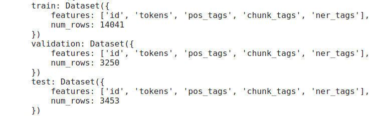
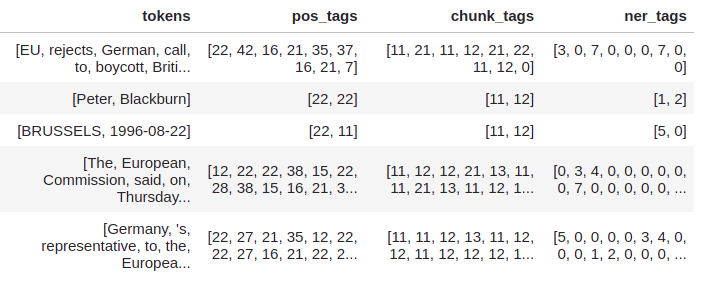
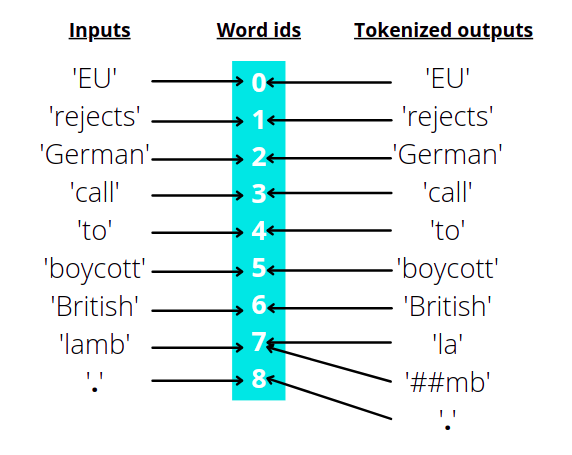
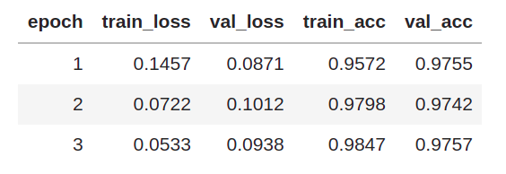

Named entity recognition¶
The plan for this chapter is to:
Learn about named entity recognition(NER)
Train a transformer model for NER
Build a web app demo(using Gradio) around the trained model to convert a sentence from western context to Indian context.
If you did not get the last point, here is an example to make it clear:
If we pass the sentence ‘I am going to Paris’ as input, the model will modify the sentence and give the output as ‘I am going to Mumbai’. As you can see, the model identified the word ‘Paris’ and coverted it to ‘Mumbai’ which is more familiar to Indians. The idea for this demo is inspired from this blog post.
Below you can see the final demo that we will be building in this chapter:

What is named entity recognition?¶
At present, there are a wide variety of tasks that machine learning models are capable of doing, named entity recognition or NER is one them. In short the job of a model trained for this task is to identify all the named entities in a given sentence.
Here is a figure showing what the model is expected to do for NER:

In the above figure, the model recognizes ‘Sarah’ as a person(PER) and ‘London’ as a location(LOC) entity. Since the other words do not belong to any category of entities, no labels are present in the output for those words.
Named entity recognition does not limit to identitfying a person, location or organization, it can also be used for identifying parts of speech of each word in a sentence. The general term used to represent these kind of tasks are called token classification.
As humans, we try to understand the contents in a book by reading it word by word. Similarly, before passing a sentence into our models, we split them into simpler tokens using something called a tokenizer.
The simplest tokenizer you can think of is splitting a sentence into words as shown below:
Input sentence: This is looking good
Output tokens: ['This', 'is', 'looking', 'good']
And here is a figure to illustrate the same:

We now have a basic understanding of the task and the related terms that we will encounter in this chapter. Now let’s talk about the dataset we will be using.
Dataset¶
Downloading the dataset¶
We will be using the conllpp dataset which can be directly downloaded using the huggingface datasets library using the code shown below:
from datasets import load_dataset
raw_datasets = load_dataset("conllpp")
On printing raw_datasets, we get the structure of our dataset as shown below:

The dataset is already split into train, validation and test sets where each set has these features/columns: id, tokens, pos_tags, chunk_tags and ner_tags
Can you guess the features that we will be using here?
If you guessed it correctly, tokens and ner_tags are the only features we require for the present use case.
This is how the first 5 rows of the training dataset will look like if it were a pandas dataframe:

Now lets talk about the columns that we will be using for our task. The tokens column will be our inputs to the model and ner_tags is what the model should predict.
Understanding model inputs¶
As you can see, the column tokens are not sentences, instead it is a list of words(which is a kind of tokenization as we discussed earlier), so from now on we can call this as pre-tokenized inputs. Even though it’s already split into words, we cannot directly feed it to our model. Our model uses something called sub-word tokenizer, which is nothing but splitting a word into multiple subwords.
Let’s take an example and make it clear:
Input sentence: "This is the pytorch code"
For the above sentence, a simple tokenizer that splits a sentence into words will give the following output: ['This', 'is', 'the', 'pytorch', 'code']
But a sub-word tokenizer may split some words into even simpler sub-words, just like this:
['This', 'is', 'the', 'p', '##yt', '##or', '##ch', 'code']
As you can see, some words like pytorch which is not commonly seen in sentences are split into multiple sub-words. Also note that except for the starting token ‘p’, all the sub-words for the word ‘pytorch’ starts with a ‘##’.
The model that we will be using for this task is bert-base-cased which is a bert model that treats cased and uncased words differently. This specific model will be helpful for our task because when writing the name of a person or a location, we always start with an upper-case letter which will make the job of our model way more easier while identifying named entities.
Now let’s write some code to tokenize each row in the tokens column using the AutoTokenizer module in transformers library.
from transformers import AutoTokenizer # to tokenize the inputs
checkpoint = 'bert-base-cased'
# load the pretrained tokenizer from our checkpoint
tokenizer = AutoTokenizer.from_pretrained(checkpoint)
# first row of the training set
train_row_1 = raw_datasets['train'][0]
Now let’s pass in the tokens column of the first row into our tokenizer. Since our tokens column contain pre-tokenized inputs, we need to set the argument is_split_into_words to True while calling the tokenizer.
inputs = tokenizer(train_row_1['tokens'], is_split_into_words=True)
If you print the inputs, you can see that our tokenizer has tokenized the words(as shown below) in such a way that it contains all the information to feed into our transformer model.
{
'input_ids': [101, 7270, 22961, 1528, 1840, 1106, 21423, 1418, 2495, 12913, 119, 102], 'token_type_ids': [0, 0, 0, 0, 0, 0, 0, 0, 0, 0, 0, 0],
'attention_mask': [1, 1, 1, 1, 1, 1, 1, 1, 1, 1, 1, 1]
}
Understanding model outputs¶
As we’ve said earlier, ner_tags is the column that we will use as labels/outputs for our model. Here is the first 5 rows of this column:

As you can see, it’s a list of numbers. Let’s see what does these numbers actually mean.
You will get all the information about each feature in the dataset using .features method. Once you filter out only the ner_tags feature from that, you will get complete information about it, as shown below:
raw_datasets['train'].features['ner_tags']
And you will get an output like this:
Sequence(feature=ClassLabel(num_classes=9, names=['O', 'B-PER', 'I-PER', 'B-ORG', 'I-ORG', 'B-LOC', 'I-LOC', 'B-MISC', 'I-MISC'], names_file=None, id=None), length=-1, id=None)
Now, it’s clear that there are 9 different classes/entities inside the ner_tags and the name of each label is present inside names.
PER,ORG,LOCandMISCrepresent person, organisation, location and miscellaneous entities respectively. The only one remaining is'O'which can be used to represent words that doesn’t belong to any entity.You might have noticed the
B-andI-prefixes for all entities except'O'. Those prefixes represent whether a word is at the begining or inside an entity. Let me give you an example and make it clear.
If the input is like this: 'My name is Roy Lee and I am from New York'
The corresponding labels should be: ['O', 'O', 'O', 'B-PER', 'I-PER', 'O', 'O', 'O', 'O', 'B-LOC', 'I-LOC'] where each label corresponds to each word in the input sentence.
As you can see, the words ‘Roy’ and ‘New’ are the words at the begining of a person and a location, so they are given the labels B-PER and B-LOC respectively. Whereas, the words ‘Lee’ and ‘York’ are not at the begining but inside a person and a location entity, so they are given the label I-PER and I-LOC respectively. All the words that does not belong to any entity is mapped to O tag.
Finally to wrap up this part, we will create a dictionary containing the id to label mapping.
# store all the ner labels
labels = raw_datasets['train'].features['ner_tags'].feature.names
# number of classes/ner tags -> [0, 1, 2, 3, 4, 5, 6, 7, 8]
ids = range(len(labels))
# id to label mapping
id2label = dict(zip(ids, labels))
Now we have an id to label mapping as shown below:
{
0: 'O',
1: 'B-PER',
2: 'I-PER',
3: 'B-ORG',
4: 'I-ORG',
5: 'B-LOC',
6: 'I-LOC',
7: 'B-MISC',
8: 'I-MISC'
}
As we have an understanding of the inputs as well outputs/labels of the dataset that we are going to use, it’s time to do some preprocessing and create a train, validation and test dataloader.
Creating the dataloaders¶
We need to complete the following tasks before wrapping everything inside a dataloader:
Tokenize the inputs(
tokenscolumn)Align the tokens and labels
The first point is strainght forward and you must have got it. It’s just tokenizing our inputs as we did earlier in this chapter. Let’s talk about the second part.
Here is an example to discuss what aligning tokens and labels mean.
These are the inputs and outputs from the first row of our dataset:
Inputs: ['EU', 'rejects', 'German', 'call', 'to', 'boycott', 'British', 'lamb', '.']
Outputs: [3, 0, 7, 0, 0, 0, 7, 0, 0]
Each word in the input list corresponds to each label in the outputs list, so, their lengths are the same. We need to tokenize and convert the input strings to integers as we’ve shown earlier in the chapter. Since the outputs are already available as integers, we need not have to bother about them for now.
Let’s tokenize the inputs and see how the tokens look.
inputs = tokenizer(train_row_1['tokens'], is_split_into_words=True)
print(inputs.tokens())
These are the output tokens:
['[CLS]', 'EU', 'rejects', 'German', 'call', 'to', 'boycott', 'British', 'la', '##mb', '.', '[SEP]']
As you can see there are two special tokens [CLS] and [SEP] at the begining and end of the sentence, those are specific to the model that we are using. [CLS] is special token added to the start of an input sentence whereas [SEP] is used as a separator between sentences. Since we have only a single sentence [SEP] is present at the end of the sentence.
Another problem is that the word ‘lamb’ is split into ‘la’ and ‘##mb’ by the tokenizer. Now the length of our input tokens is 12 whereas the length of the labels is 9 because our tokenizer added a [CLS], [SEP] and ##mb to our inputs.
For training, each token should have a label assigned to it, so we need to align the tokens and labels in such a way that both their lengths are same.
Fortunately, even after tokenization and splitting words into multiple sub-words, we could get the word ids of each token using .word_ids() method. Here is an example showing the same.
For the inputs ['EU', 'rejects', 'German', 'call', 'to', 'boycott', 'British', 'lamb', '.'], the word ids will be the index of the word in the list.
So, if we tokenize the above inputs using the tokenizer and take the word ids, this is what we get: [None, 0, 1, 2, 3, 4, 5, 6, 7, 7, 8, None]
The two None values at the start and end represents [CLS] and [SEP] tokens. The rest of the integers represent the word ids for each token. You can clearly see that the only word id that is repeating twice is 7 which is the word id for ‘lamb’. Since it’s split into ‘la’ and ‘##mb’, both of them have the same word ids.
Here is an illustrated diagram to make the above process clear:
Now let’s write a simple function to align labels with tokens.
The function will take a list of word ids and its corresponding ner labels as arguments and then the following things happen. We loop through each word id in the provided list and checks whether the word id is equal to None(special tokens), if so we assign it a label of -100, otherwise we assign the label corresponding to its word id.
def align_tokens_and_labels(word_ids, labels):
previous_word_id = None
new_labels = []
for word_id in word_ids:
if word_id!=previous_word_id:
label = -100 if word_id==None else labels[word_id]
elif word_id==None:
label = -100
else:
label = labels[word_id]
# checks if the ner label is of the form B-XXX
if label%2==1:
# converts the label from B-XXX to I-XXX
label += 1
previous_word_id = word_id
new_labels.append(label)
return new_labels
Let’s test the function:
ner_labels = train_row_1['ner_tags']
# tokenized inputs
inputs = tokenizer(train_row_1['tokens'], is_split_into_words=True)
word_ids = inputs.word_ids()
align_tokens_and_labels(word_ids, ner_labels)
Here are the output labels:
[-100, 3, 0, 7, 0, 0, 0, 7, 0, 0, 0, -100]
Now we can write a single function to apply this to every example in our dataset. Our final function should take in a batch of examples from our dataset and loop through each example in the batch, align the tokens and labels and finally return the tokenized inputs and corresponding labels.
We also truncate our tokens to a length of 512. Any input example that has a length higher than this are shortened/truncated to 512. The default maximum length of our tokenizer is 512, so we just need to set truncation=True while tokenizing the inputs.
Note
We can tokenize a group of input examples together and get the word ids using indexing.
For example, if you’ve tokenized 3 sentences together, you can get the word ids of the first sentence using inputs.word_ids(0).
def prepare_inputs_and_labels(ds):
inputs = tokenizer(ds['tokens'], truncation=True, is_split_into_words=True)
labels_batch = ds['ner_tags']
new_labels = []
# loop through each example in the batch
for idx, labels in enumerate(labels_batch):
# extract the word ids using the index
word_ids = inputs.word_ids(idx)
new_label = align_tokens_and_labels(word_ids, labels)
new_labels.append(new_label)
inputs['labels'] = new_labels
return inputs
Now let’s apply this function to our dataset as below:
prepared_datasets = raw_datasets.map(
prepare_inputs_and_labels,
batched=True,
remove_columns=raw_datasets['train'].column_names
)
We used the .map method and set batched=True to map our function to each batch in our dataset. Our final prepared dataset will only contain the following features: ['input_ids', 'token_type_ids', 'attention_mask', 'labels'], all other features are removed.
Now let’s wrap our datasets inside a pytorch dataloader as shown below:
# to pad the inputs and labels in a batch to same size
from transformers import DataCollatorForTokenClassification
from torch.utils.data import DataLoader
batch_size = 16
collate_fn = DataCollatorForTokenClassification(tokenizer=tokenizer)
# training dataloader
train_dl = DataLoader(
prepared_datasets['train'],
batch_size=batch_size,
shuffle=True,
collate_fn=collate_fn
)
# validation dataloader
val_dl = DataLoader(
prepared_datasets['validation'],
batch_size=batch_size,
shuffle=True,
collate_fn=collate_fn
)
# test dataloader
test_dl = DataLoader(
prepared_datasets['test'],
batch_size=batch_size,
shuffle=True,
collate_fn=collate_fn
)
Training the model¶
As our dataloaders are in place, let’s discuss the steps to train our model. First we will create the model and optimizer for our training:
import torch
from torch import optim
# token classification model
from transformers import AutoModelForTokenClassification
# load the pretrained model
model = AutoModelForTokenClassification.from_pretrained(
checkpoint,
num_labels=len(labels)
)
opt = optim.AdamW(model.parameters(), lr=1.23e-4)
The learning rate is obtained using the this learning rate finder. I made some hacky tweaks to make it work for this specific application.
We will obviously use a GPU for training the model, so we need to move our dataloaders, model and the optimizer to it. We will use huggingface’s accelerate library for this. If not already installed you can do it by running the command pip install accelerate from your terminal.
With accelerate, moving everything to GPU is as simple as this:
from accelerate import Accelerator
accelerator = Accelerator()
train_dl, val_dl, test_dl, model, opt = accelerator.prepare(
train_dl,
val_dl,
test_dl,
model,
opt
)
We now need a metric to measure the performance of our model after each epoch. We will use the ‘seqeval’ framework for this, which gives the f1-score, precision, recall and overall accuracy. You can install it by running pip install seqeval on your terminal.
For calculating the metrics, we need to pass in the predictions and corresponding labels in string format to seqeval, just like shown below:
from datasets import load_metric
metric = load_metric('seqeval')
targets = ['O', 'B-PER', 'I-PER', 'O', 'O', 'O']
predictions = ['O', 'B-PER', 'O', 'O', 'O', 'O']
metric.compute(predictions=[predictions], references=[targets])
Running the above code will return this:
{'PER': {'precision': 0.0, 'recall': 0.0, 'f1': 0.0, 'number': 1},
'overall_precision': 0.0,
'overall_recall': 0.0,
'overall_f1': 0.0,
'overall_accuracy': 0.8333333333333334}
From the above outputs, we will take the overall_accuracy and print it after each epoch to measure the performance of our model on validation set.
Since seqeval require the predictions and labels to be in string format, lets write a function to convert them from numbers to string format.
def process_preds_and_labels(preds, targets):
preds = preds.detach().cpu()
preds = preds.argmax(dim=-1)
targets = targets.detach().cpu()
true_targets = [
[labels[t.item()] for t in target if t!=-100]
for target in targets
]
true_preds = [
[labels[p.item()] for p, t in zip(pred, target) if t!=-100]
for pred, target in zip(preds, targets)
]
return true_preds, true_targets
Now let’s write a function for our training loop which takes a dataloader as input to get the prediction from the model, calculate the loss and finally do a backward pass and step the optimizer. For the backward pass we will use accelerator.backward(model.loss) instead of model.loss.backward() as we’ve used accelerate to move everything to GPU.
The model will return the predictions as well as the loss which can be accessed by model.logits and model.loss respectively.
def run_training_loop(train_dl):
model.train()
for batch in train_dl:
opt.zero_grad()
out = model(**batch)
accelerator.backward(out.loss)
opt.step()
# convert target labels and predictions to string format for computing accuracy
preds, labels = process_preds_and_labels(out.logits, batch['labels'])
# add the target labels and predictions of this batch to seqeval
metric.add_batch(predictions=preds, references=labels)
Similarly, let’s write an evaluation loop as well.
def run_evaluation_loop(test_dl):
model.eval()
with torch.no_grad():
for batch in test_dl:
out = model(**batch)
# convert target labels and predictions to string format for computing accuracy
preds, labels = process_preds_and_labels(out.logits, batch['labels'])
# add the target labels and predictions of this batch to seqeval
metric.add_batch(predictions=preds, references=labels)
Now let’s use these functions to train our model for 3 epochs and save the model after each epoch.
epochs = 3
for epoch in range(epochs):
run_training_loop(train_dl)
# compute training accuracy
train_acc = metric.compute()['overall_accuracy']
run_evaluation_loop(val_dl)
# compute validation accuracy
val_acc = metric.compute()['overall_accuracy']
print(f"epoch: {epoch} train_acc: {train_acc} val_acc: {val_acc}")
# save the model at the end of epoch
torch.save(model.state_dict(), f"model-v{epoch}.pt")
After training for 3 epochs, these are our final results:

Inorder to get the nice looking table of results shown above, I made some modifications in the training code to use fastprogress. It’s similar to the tqdm progress bar but I love the nicely formatted output given by fastprogress which drags me to use it. Especially, the print messages become a mess while training for longer number of epochs on notebooks, but fastprogress solves that for me :)
We get a similar overall accuracy on the test set as well. The below code returns all the metrics(including overall accuracy) on the test set:
run_evaluation_loop(test_dl)
metric.compute()
Building the demo¶
And finally, we’ve completed the training and validation of the model. Now it’s time to build the gradio demo, so that everyone can use it without pressing Shift+Enter :)
As we have said in the begining of this chapter, we will build an application to convert a sentence from western context to Indian context.
For building our final application we need two more libraries - gradio and gensim(version 4.1.2).
So let’s start building our demo. First let’s import gradio(to build our app) and gensim downloader to download the word2vec embeddings. Once the embeddings are downloaded, we could use the .most_similar() method of the api to find the most similar words for the named entities recognized by our model.
As an example, for an input sentence like this: 'My name is Sarah and I live in Columbia', we will get a modified sentence like this 'My name is Amanda and I live in Delhi ' where ‘Sarah’ and ‘Columbia’ are replaced with words that fits more into the Indian context.
import gradio as gr
import gensim.downloader as api
Let’s download the word2vec embeddings.
word2vec = api.load('word2vec-google-news-300')
Now let’s write the function that takes in a sentence containing named entities familiar to western people and return the sentence modified to Indian context.
The function will split the the input sentence into words, tokenize it and pass it to the model for making the predictions.
After that, we create a dictionary containing the words of the input sentence as keys and its corresponding string labels as values.
Then we find the word that is more related/closer to the word ‘India’ and farther away from the word ‘USA’ for all person, location and organisation entities in the sentence.
Then we replace these words with the one we got from step 3 and return the final text.
def prepare_output(text):
# split the sentence into lis of words
text_split = text.split()
# tokenize the words and return as pytorch tensors
tokens = tokenizer(
text_split,
is_split_into_words=True,
truncation=True,
return_tensors='pt'
)
# make predictions for each token
preds = model(**tokens)['logits'].argmax(dim=-1)
# find the named entity corresponding to each word
word_label = {}
for pred, word_id in zip(preds[0], tokens.word_ids()):
if word_id!=None:
label = labels[pred]
word = text_split[word_id]
word_label[word] = label
out_text = ""
for word, label in word_label.items():
# replace PER, LOC and ORG entities with words closer to 'India'
if label.split('-')[-1] in ['PER', 'LOC', 'ORG']:
try:
word = word2vec.most_similar(
positive=['India', word],
negative=['USA'], topn=1
)[0][0]
except KeyError:
pass
out_text += f"{word} "
return out_text
Let’s test this with an example,
prepare_output("My name is Mitchell and I live in Paris")
And here’s the output:
'My name is Mukherjee and I live in Delhi'
‘Mitchell’ got replaced by ‘Mukherjee’ and ‘Paris’ got replaced by ‘Delhi’.
This function may not work as expected in some cases where the name of a location has two words like in ‘New York’. Our function will consider ‘New York’ as two unrelated words and replace both of them separately instead of considering them as a single entity like below:
prepare_output("My name is Mitchell and I live in New York")
which returns,
'My name is Mukherjee and I live in Delhi Delhi'
We don’t want this to happen, so here is a slightly modified function to consider location or organisation names as a single word(join them by a ‘_’), which will convert ‘New York’ to ‘New_York’ and ‘San Francisco’ to ‘San_Francisco’.
def prepare_output(text):
text_split = text.split()
tokens = tokenizer(text_split, is_split_into_words=True, truncation=True, return_tensors='pt')
preds = model(**tokens)['logits'].argmax(dim=-1)
out = {}
last_b_tag = ""
for p, w_id in zip(preds[0], tokens.word_ids()):
if w_id!=None:
label = labels[p]
label_split = label.split('-')
word = text_split[w_id]
if word not in out.keys():
if label_split[0]=='I' and label_split[-1]==last_b_tag.split('-')[-1]:
old_key = list(out.keys())[-1]
new_key = old_key+f" {word}"
out.pop(old_key)
out[new_key] = last_b_tag
else:
out[word] = label
if (label_split[0]=='B') and (label_split[-1] in ['ORG', 'LOC']):
last_b_tag = label
out_text = ""
for word, tag in out.items():
if tag.split('-')[-1] in ['PER', 'LOC', 'ORG']:
try:
word = word2vec.most_similar(positive=['India', word.replace(' ', '_')], negative=['USA'], topn=1)[0][0]
except KeyError:
pass
out_text += f"{word.replace('_', ' ')} "
return out_text
Now it’s time to launch our gradio demo, it’s as simple as passing the function to be executed(here it is prepare_output), the type of input(text box) and the type of output to be shown(text box) to gr.Interface() just like this:
interface = gr.Interface(
prepare_output,
inputs=gr.inputs.Textbox(label="Input text", lines=3),
outputs=gr.outputs.Textbox(label="Output text"),
)
# launch the demo
interface.launch()

And voila, we have our demo up and running!!